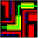
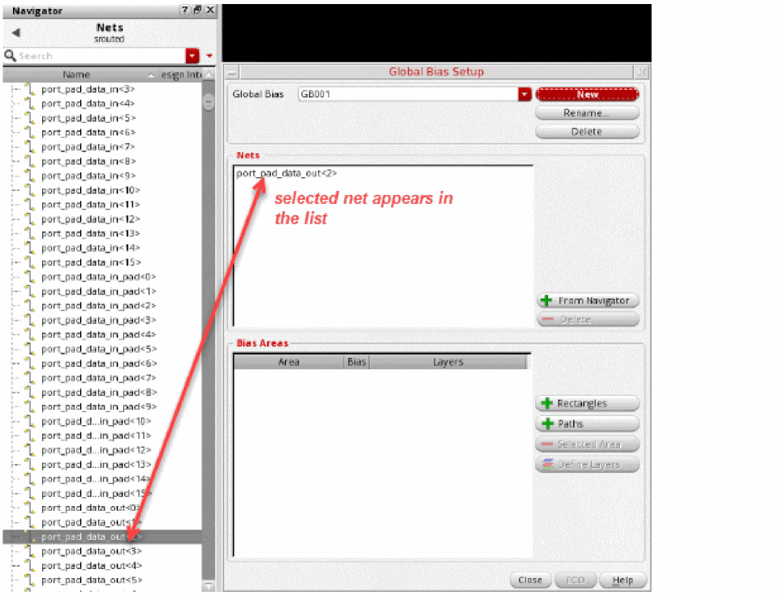
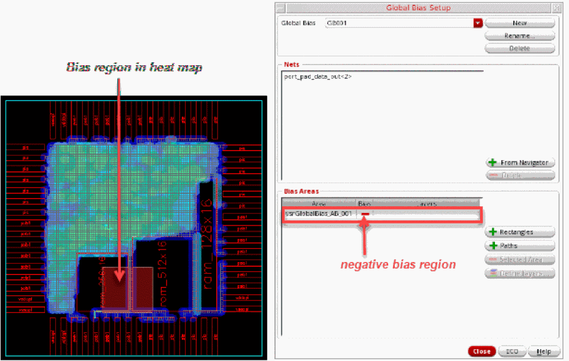
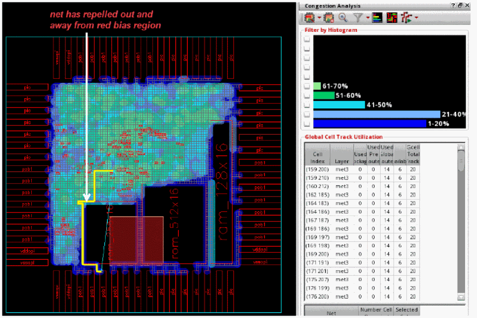

Creating a Global Bias Negative Region Constraint
Consider the global bias negative region constraint as a magnet that can repel a group of nets and buses out of a region during global routing. These biased nets take priority in being pushed out of a bias region by global routing. This can result in the biased nets becoming more circuitous. Another way to conceptualize the negative bias region is as a soft blockage for a selected set of nets.
To create a global bias negative region, perform the following steps:
- Select a net, group of nets, or a bus from the Navigator assistant. For example, select the net port_pad_data_out<1> from the Navigator assistant.
-
Click the Global Bias Setup icon 
on the Congestion Analysis assistant toolbar.
The Global Bias Setup form displays. -
Click New to create a new global bias constraint group.
The form is updated to create a default group named as GB002. This is an auto-generated global bias name. Also, the net selected in the Navigator assistant appears in the Nets list box.
You can add and remove the nets to the Global Bias Setup form.
To add nets:- Select a net or a group of nets from the Navigator assistant.
- Click the + From Navigator button in the Global Bias Setup form.
The nets selected in the Navigator assistant are displayed in the Nets list box.
To remove nets:
The selected net is removed from the Nets list box. - To edit the global bias constraint group name, click in the Global Bias text field and specify another name.
- To add the negative bias region, click the + Rectangles button.
-
Click and drag to draw a region in the heat map.
The region created on the heat map is used as the coordinates for the Bias Area. The bias area is automatically assigned a name called vsrGlobalBias_AB_002 and is displayed in the Bias Areas list box. -
Click the green ± symbol in the Bias column next to the bias area. This displays a red —symbol, which indicates a negative bias.
 -
If you have created an incorrect region, you can delete it. To do so:
The selected bias area is removed. -
To see how the new constraint alters routing and congestion, click the ECO button in the Global Bias Setup form or click the Global Route and ECO Congestion Analysis option from the Congestion Analysis drop-down list.
The following figure shows that the net is now repelled from the red bias region and can route freely.

Related Topics
Creating a Global Bias Positive Region Constraint
Creating a Global Bias Path Constraint
Creating Multiple Global Bias Constraints for Specific Layers
Return to top